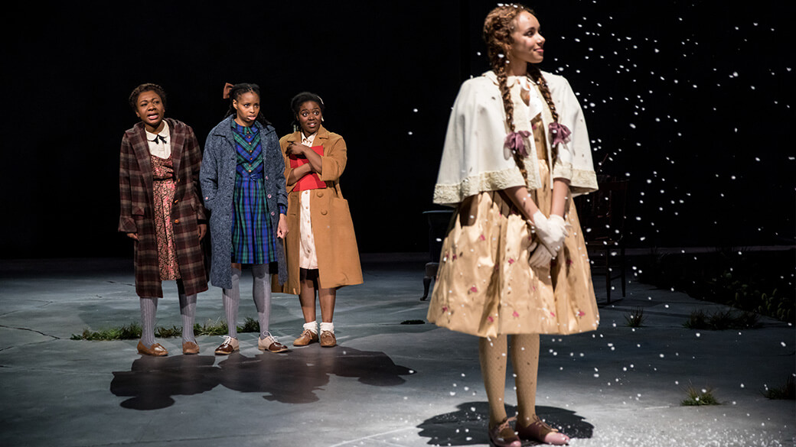

The Bluest Eye
In The Bluest Eye, the main character, Pecola, experiences discrimination due to her race and appearance from the white and also the black community. One of the black characters that showed discrimination to her was Geraldine, who pointed her hatred for the injures made to her cat on Pecola, who didn’t do it. Geraldine believed that she is better than other black people, as she had lighter shade. She is richer than usual black families, so that she can have a beautiful and clean house with expensive dresses. Due to that, she considered herself to be of a higher and better race, of having the right to despise black people that aren’t as prosperous and light-skin as her.
There is another character that believes herself to be better than Pecola and her friend – Maureen. That girl is rich and light-skinned too, and she easily insults black girls by emphasizing their race and calling them poor and ugly, even though she is black too.

Frieda, Claudia, Pecola, Maureen. Photo by Dan Norman.
 Pecola and Mrs. Breedlove.
Pecola and Mrs. Breedlove.
Moreover, we see how the father of the main character, a young black adult Cholly, was humiliated and insulted by white men with guns when he was having sex with a girl. After this occasion, he starts hating the girl, Darlene, instead of directing his hatred to those white men. He knows that he is powerless and defenseless against them, so he chooses to hate Darlene, even though she is another victim of racism. In that way, it is similar to what Geraldine does – she cannot be accepted into white society, so she chooses to hate the black community that she is trying to escape. In the case of Pecola’s father, Cholly, he cannot cope with his anger towards unbeatable white men so he decides to direct his anger towards the girl he was with, as well as other women. That way, since black people do not have many opportunities to fight racism, they end up having internal conflicts, rather than externalizing their problem.
 Mrs. Breedlove and Cholly. Photo by Dan Norman.
Mrs. Breedlove and Cholly. Photo by Dan Norman.
Another example of how systematic racism deeply affects the life of a black character is Polly, Pecola’s mother. We see that she ultimately devotes her life to being a maiden in a house of a rich white family, while nearly abandoning her own family and losing interest in raising her daughter. That happens because of the lack of opportunities and a huge socioeconomic gap between the black and white community. Polly provides an example of how members of the black community have to come to serve the white people because of how society treats them. At the time period of the novel (1940-1941) this problem was so immense that black people primarily didn’t even have the choice of whether to serve white people or to stay very poor.